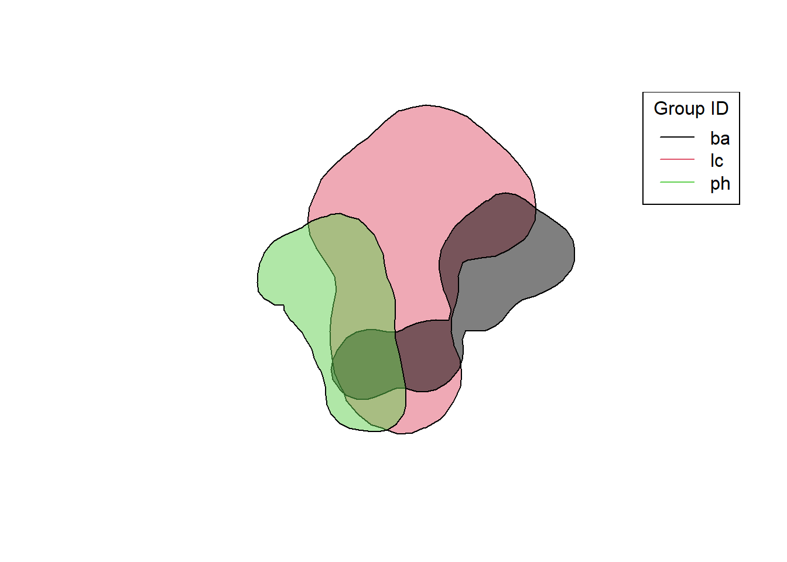
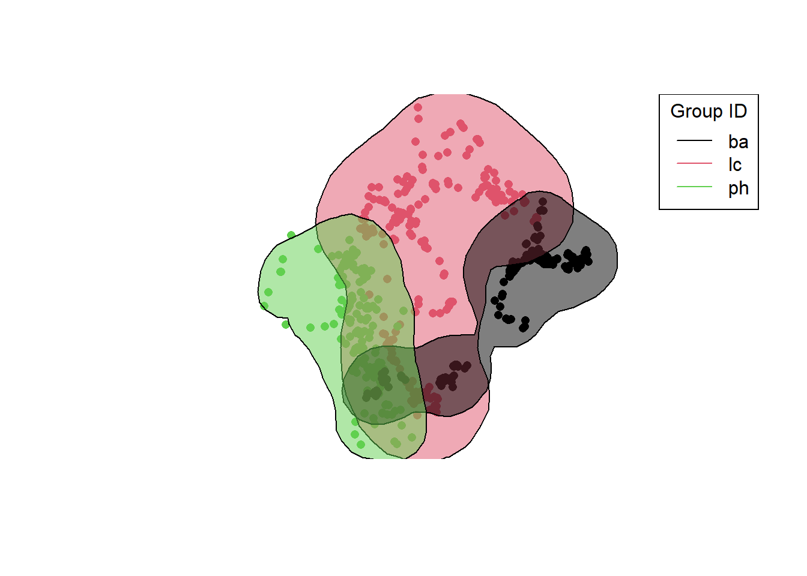
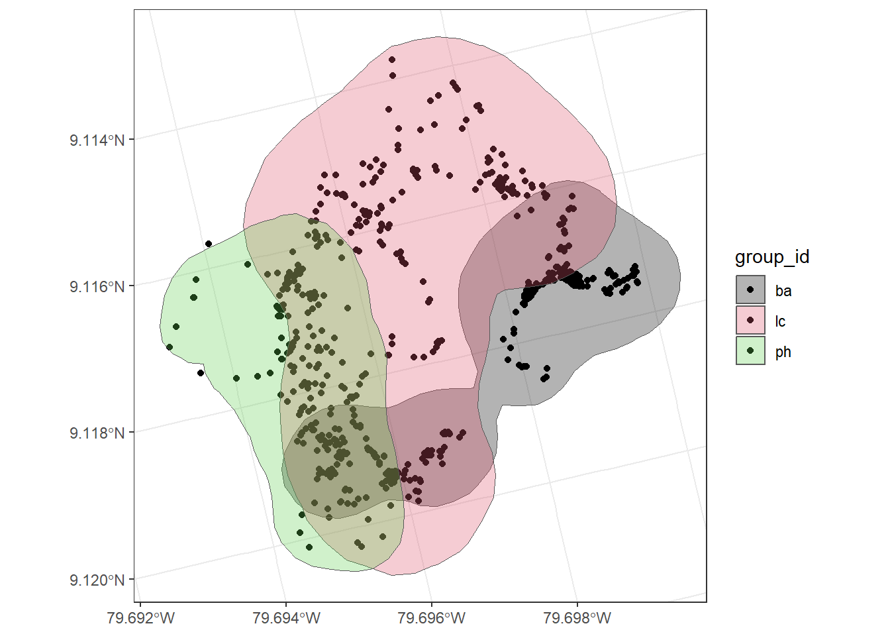

Chapter 3 Visualization
In this chapter I created home range maps by tamarin group
library(sf)
library(sp)
library(dplyr)
library(adehabitatHR)
library(tidyverse)First, I converted my “groups” data frame to a spatial points data frame and projected to UTM
groups <- readRDS("groups.RDS")
groups_a <- groups %>%
dplyr::select(group_id, lon, lat)
coordinates(groups_a) <- c("lon", "lat")
proj4string(groups_a) <- CRS("+init=epsg:4326") # define crs
groups_a <- sp::spTransform(groups_a, CRS = CRS("+init=epsg:32738")) # project to UTMNext, I calculated and plotted home ranges by group using kernel density estimation
library(scales) # allows me to make polygons partly transparent using alpha argument
ud <- kernelUD(groups_a, h = "href")
hr <- getverticeshr(ud, percent = 95) # hr is in hectares
as_tibble(hr) # shows home range in hectares of each group ## # A tibble: 3 × 2
## id area
## <chr> <dbl>
## 1 ba 39.2
## 2 lc 89.2
## 3 ph 38.8plot(hr, col = alpha(1:3, 0.5))
legend("topright", legend = hr$id, lty = 1, col = alpha(1:3),
title = "Group ID")
Here I plotted both spatial points and polygons together by group
library(graphics)
plot(groups_a, col = as.factor(groups_a@data$group_id), pch = 16)
plot(hr, col = alpha(1:3, 0.5), add = TRUE)
legend("topright", legend = hr$id, lty = 1, col = alpha(1:3),
title = "Group ID")
This is similar to the plot above, however I used the sf and ggplot2 packages instead.
library(sf)
groups_sf <- st_as_sf(groups_a)
groups_hr <- st_as_sf(hr)
ggplot() +
geom_sf(data = groups_sf, aes(fill = group_id)) +
geom_sf(data = groups_hr, aes(fill = id)) +
scale_fill_manual(values = alpha(1:3, 0.3)) +
theme_bw()